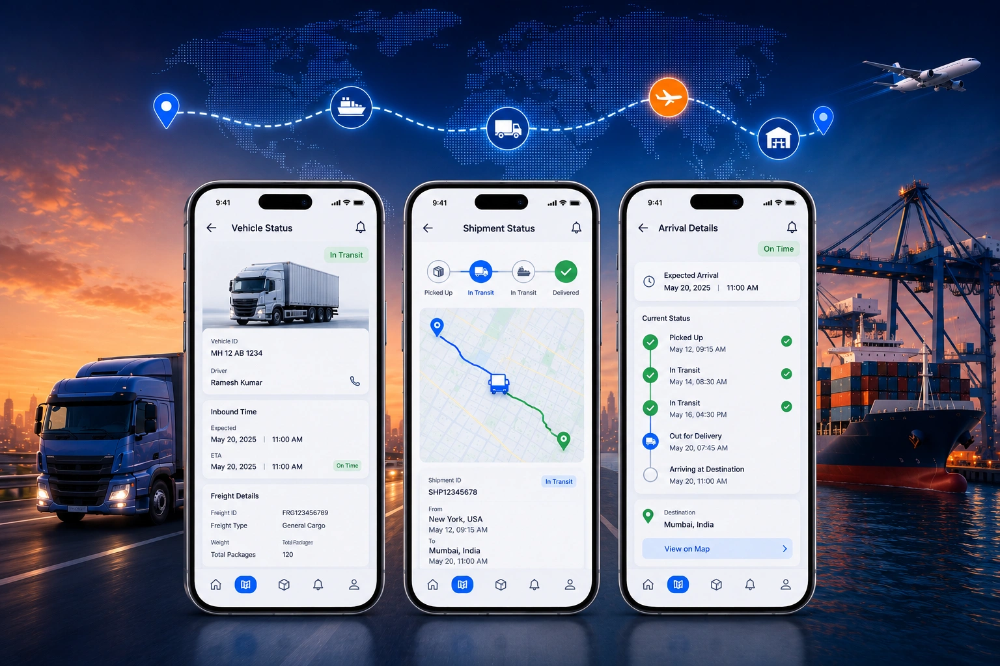
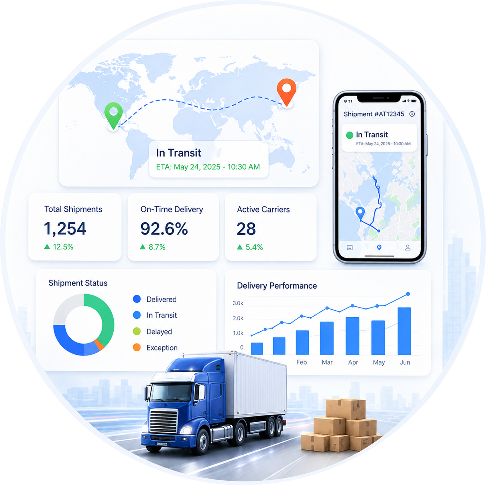

No Real-Time Shipment Visibility
Teams cannot monitor shipment locations instantly, making it difficult to respond quickly to delivery delays or disruptions.

Shipment Tracking Software is a smart logistics solution that enables businesses to track, monitor, and manage shipments in real time from dispatch to final delivery through a centralized dashboard.
AngelTech Logistics' AI-Powered Shipment Tracking Software consolidates shipment data across multiple carriers into one intelligent platform, providing real-time visibility, automated status updates, AI-powered alerts, and actionable insights to improve delivery performance and customer satisfaction.
Managing shipments across multiple carriers without a centralized shipment tracking system creates visibility gaps, delayed deliveries, increased customer inquiries, and inefficient logistics operations. AngelTech Logistics Shipment Tracking Software eliminates these challenges with AI-powered automation, real-time shipment visibility, and proactive logistics intelligence.
Teams cannot monitor shipment locations instantly, making it difficult to respond quickly to delivery delays or disruptions.
Monitor every shipment in real time with GPS-enabled tracking and a centralized dashboard.
Switching between different carrier websites slows shipment monitoring and reduces productivity.
Connect all logistics providers into one intelligent platform for centralized shipment management.
Customer support teams spend valuable time manually responding to shipment status requests.
Deliver automatic shipment updates to customers through email, SMS, or WhatsApp.
Shipment delays are often discovered too late to take corrective action.
Artificial Intelligence predicts delivery delays early and alerts logistics teams instantly.
Failed deliveries, damaged goods, and transit issues create costly disruptions.
Receive instant alerts for shipment exceptions and resolve issues before they impact customers.
Businesses lack accurate data to evaluate carrier reliability, delivery speed, and service quality.
Analyze carrier KPIs, delivery performance, transit times, and logistics trends with AI dashboards.
Spreadsheet-based shipment tracking consumes time and increases reporting errors.
Generate live shipment reports and dashboards without manual data compilation.
Disconnected logistics systems prevent businesses from viewing the complete shipment journey.
Track every shipment from pickup to final delivery across local, national, and global logistics networks.
AngelTech Logistics' AI-Powered Shipment Tracking Software delivers complete shipment visibility, AI-driven delay prediction, automated notifications, and advanced logistics analytics from pickup to final delivery. Monitor shipments, manage multiple carriers, and optimize logistics operations through one centralized platform.

Track every shipment with live location updates, delivery milestones, and a centralized tracking dashboard.
Monitor shipments across regional, national, and global logistics partners from one platform.
Predict shipment delays, identify delivery risks, and take proactive action before disruptions occur.
Send real-time shipment updates through Email, SMS, WhatsApp, and system alerts automatically.
Detect delayed, failed, damaged, or lost shipments instantly for faster issue resolution.
View shipment status, delivery progress, pending deliveries, and carrier performance in real time.
Store digital PODs, customer signatures, timestamps, and delivery images securely in one place.
Measure on-time deliveries, transit times, and compare carrier performance using live analytics.
Analyze shipment history, delivery performance, logistics costs, and business KPIs with interactive dashboards.
Access shipment information anytime through a scalable cloud infrastructure with enterprise-grade security.
Our AI-powered Shipment Tracking Software automates the entire shipment lifecycle, delivering real-time visibility, intelligent alerts, and proactive logistics insights from dispatch to final delivery.
Import shipment data directly from ERP, WMS, OMS, or eCommerce platforms with zero manual entry.
Select the best logistics partner based on cost, destination, or service level automatically.
Monitor shipment location, delivery status, and ETA through one centralized dashboard.
AI detects delays, shipment exceptions, and delivery risks with instant proactive alerts.
Send real-time Email, SMS, and WhatsApp notifications throughout the shipment journey.
Measure carrier performance, improve delivery efficiency, and optimize logistics operations.
More than tracking shipments, AngelTech Logistics' AI-Powered Shipment Tracking Software helps teams improve logistics visibility, automate operations, and make smarter decisions with real-time updates, AI-driven insights, and centralized shipment management.
Manage every shipment with confidence using complete visibility from pickup to delivery.
Gain control over logistics operations with live insights, predictions, and performance monitoring.

Keep customers informed with automated updates and reduce manual support workload.
Make informed decisions with AI-powered dashboards, reports, and logistics analytics.
AngelTech Logistics delivers an AI-Powered Shipment Tracking Software that provides real-time visibility, AI-driven alerts, and centralized shipment monitoring to improve delivery performance and optimize logistics operations.

Take control of every shipment with AngelTech Logistics' AI-Powered Shipment Tracking Software. Track shipments in real time, automate customer updates, reduce delivery delays, and improve logistics performance from one intelligent platform.
Book a free demo and discover why businesses choose AngelTech Logistics as the best Shipment Tracking Software in India.
Shipment Tracking Software enables businesses to monitor shipments in real time, manage multiple carriers, and gain complete visibility throughout the delivery journey.
AI collects shipment data, predicts delivery delays, detects exceptions, and provides real-time alerts through a centralized tracking dashboard.
Yes. AngelTech Logistics supports multi-carrier integration, allowing you to monitor shipments from multiple logistics partners on one platform.
Yes. The platform continuously updates shipment status, transit milestones, estimated delivery times, and shipment progress in real time.
Absolutely. Customers receive automated tracking notifications and can use a branded tracking portal to check shipment status anytime.
Yes. Shipment updates are automatically delivered via Email, SMS, or WhatsApp at every important delivery milestone.
Yes. Our cloud-based Shipment Tracking Software is scalable and supports startups, SMEs, enterprises, and organizations with complex logistics operations.